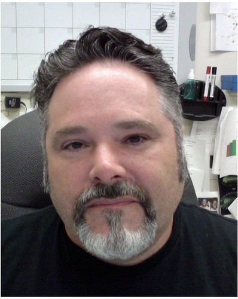
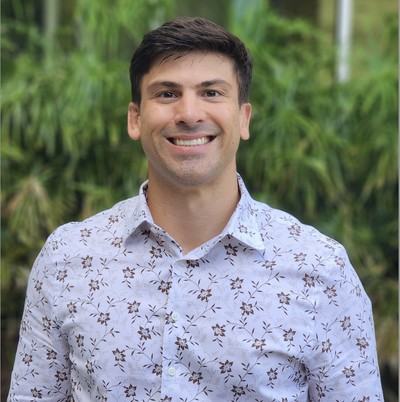

Founders with decades of combined experience in neurogenetics, rare disease biology, electrophysiology, and CRISPR — with deep institutional roots at Tulane University.

Professor of Physiology · Tulane University School of Medicine
Dr. Reiter is a distinguished neuroscientist specializing in neurogenetic disorders, with a particular focus on chromosome 15q imprinting disorders — Angelman syndrome, Prader-Willi syndrome, and Duplication 15q. He earned his Ph.D. from Baylor College of Medicine in 1997.
His pioneering postdoctoral research demonstrated that approximately 75% of human disease-related genes have significant homologues in Drosophila melanogaster, establishing the fruit fly as a foundational model for human genetic disease research.
Before joining Tulane University School of Medicine in 2024, Dr. Reiter was a professor at the University of Tennessee Health Science Center for over 20 years. His laboratory has pioneered the use of dental pulp stem cells as a patient-specific neuronal model system — a body of work that forms the scientific core of PulpNeuro. He is funded by the NIH and the Foundation for Prader-Willi Research.

Postdoctoral Fellow · Reiter Lab, Tulane University
Dr. Rodriguez brings rare disease neuroscience expertise combined with hands-on industry experience building assay systems for pharma. Prior to joining the Reiter Lab, he worked as a Research Scientist II at AxoSim (now 28Bio), where he designed experiments, developed novel analysis tools, and presented data to industry clients including AstraZeneca.
At AxoSim, his work focused on testing novel SARM1 inhibitors to prevent Wallerian degeneration in a human Nerve-on-a-Chip model — directly relevant to neurodegeneration and neuroprotection. He developed deep expertise in iPSC-derived neurons and human primary Schwann cells through collaborations with leading industry partners.
His technical capabilities at PulpNeuro span the full electrophysiology stack: multielectrode array (MEA), patch clamp, CRISPR-Cas9 editing of primary neuronal cells, and genetically encoded fluorescence tools. He is leading the development of DPSC-derived neuronal organoids and MEA-based seizure assays.
PulpNeuro was founded in June 2026 and will be located in NOBIC (New Orleans BioInnovation Center) across from Tulane University School of Medicine. The company operates in close partnership with the Reiter Lab at Tulane University School of Medicine, enabling a two-entity model for NIH STTR funding and joint grant applications.
Tulane University School of Medicine · Department of Physiology
New Orleans, Louisiana